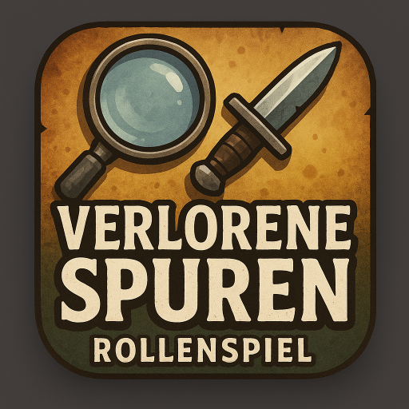

Verlorene Spuren

Nach einem tragischen Einsatz, bei dem seine Partnerin ums Leben kam, lebt Erik zurückgezogen. Doch als in seiner alten Heimatstadt Dornheim plötzlich Menschen verschwinden, wird er hineingezogen in einen neuen Fall – vielleicht seinen letzten.
Starten